図解：ロマン主義
フランスのロマン主義の成立
- 帝政期
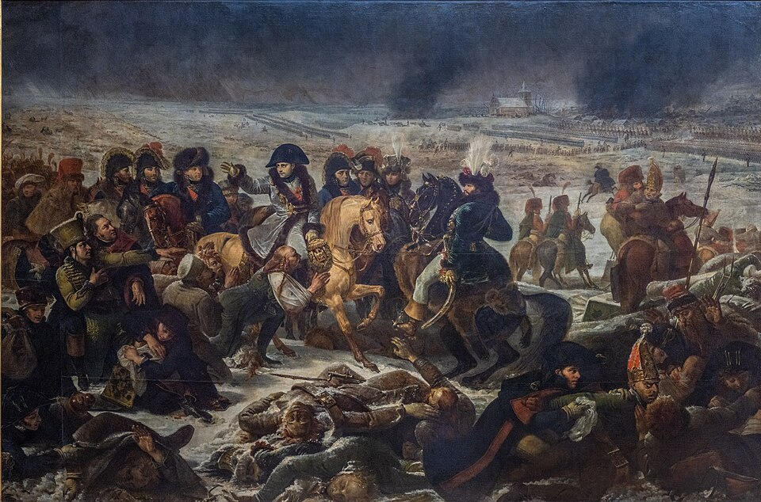
グロの激動感新古典主義の中で
色彩が線に勝る - 1819
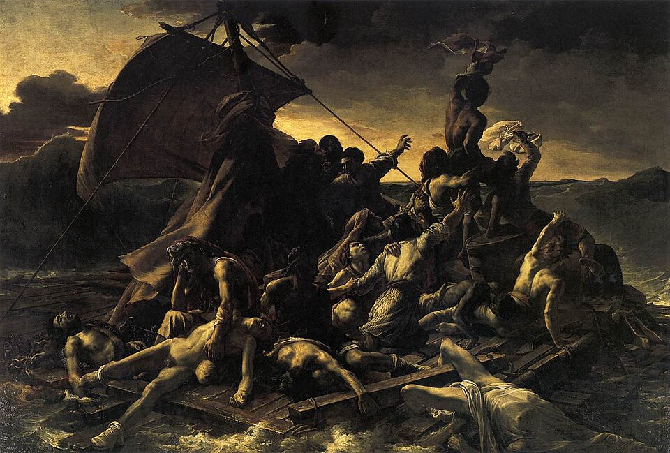
ジェリコーの筏身近な事件を題材
ロマン主義の幕開け - 1824
 コンスタブル《干草の車》が
コンスタブル《干草の車》が
パリのサロンへ - 1824
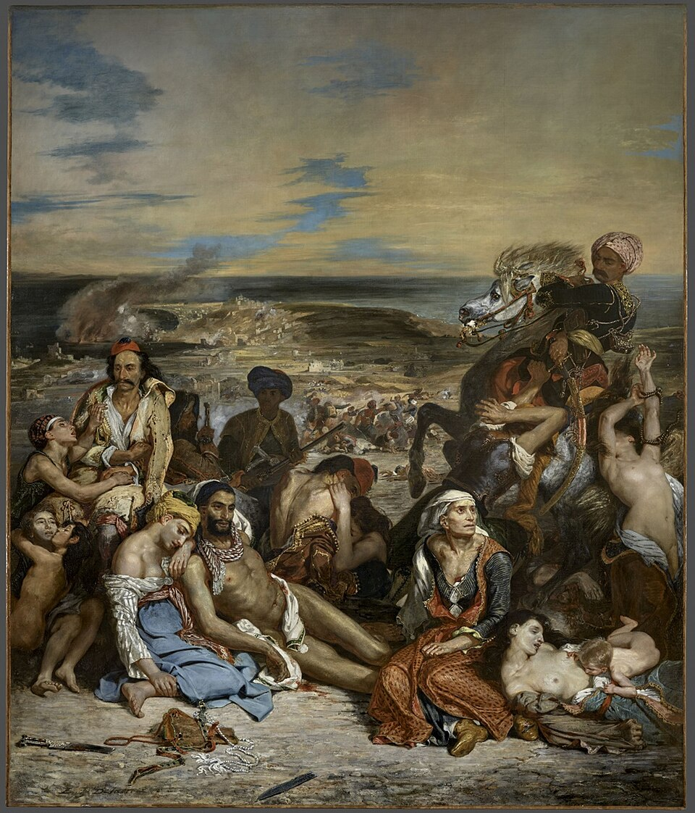
ドラクロワ登場《キオス島の虐殺》
アングルと対決 - 1830
 七月革命を描くロマン主義を代表
七月革命を描くロマン主義を代表
政府が買い上げ
新古典主義と何が違うか
重要人物
フランスのロマン主義
 アントワーヌ＝ジャン・グロ画家ダヴィッドの後継。色彩でロマン主義を先取り
アントワーヌ＝ジャン・グロ画家ダヴィッドの後継。色彩でロマン主義を先取り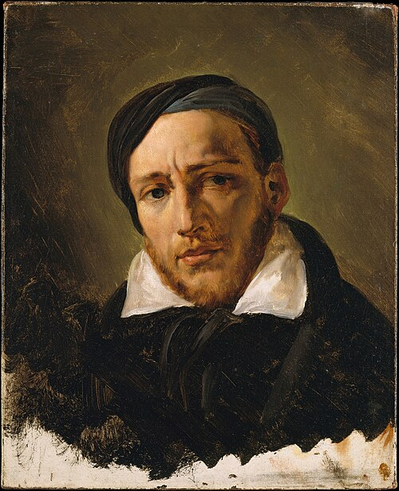
テオドール・ジェリコー画家《メデューズ号の筏》でロマン主義の幕開け ウジェーヌ・ドラクロワ画家ロマン主義の最重要画家。ジェリコーの意志を継ぐ
ウジェーヌ・ドラクロワ画家ロマン主義の最重要画家。ジェリコーの意志を継ぐ
新古典主義とアカデミー

各国のロマン主義
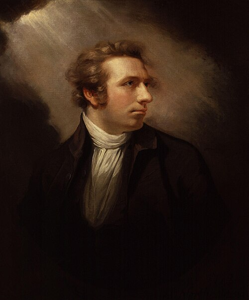
フュースリ画家古典的手法で、夢を主題に怪奇で官能的な絵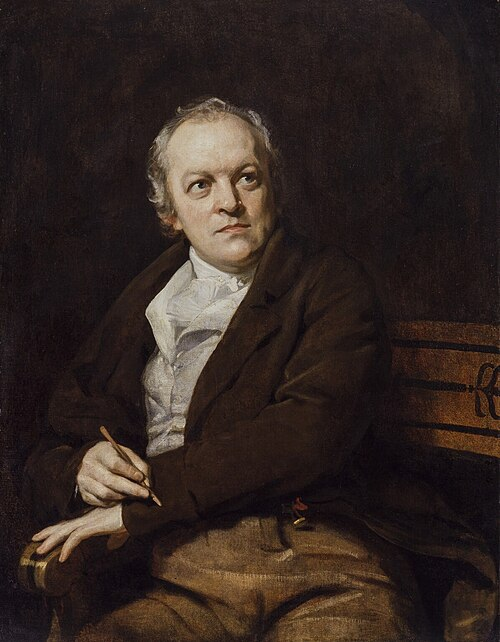
ブレイク詩人・画家想像したものを模倣する文学的作品 ジョン・コンスタブル風景画家移り変わる自然を描く。フランスの新世代に影響
ジョン・コンスタブル風景画家移り変わる自然を描く。フランスの新世代に影響- ウィリアム・ターナー風景画家ヴェネツィアで光を研究。晩年は抽象的な表現へ
 フリードリヒ風景画家広大な自然に人を小さく置き、畏怖の念を表す
フリードリヒ風景画家広大な自然に人を小さく置き、畏怖の念を表す- ルンゲ画家象徴的な風景で宗教的な感情を表す
 ゴヤ画家スペインの巨匠。晩年に自室のため「黒い絵」を描く
ゴヤ画家スペインの巨匠。晩年に自室のため「黒い絵」を描く
時代をつくった人
肖像・図版の出典
- 《自画像》アントワーヌ＝ジャン・グロ、1795年：出典（Public domain）
- 《テオドール・ジェリコーの肖像》オラース・ヴェルネ、1822～1823年頃、メトロポリタン美術館：出典（CC0）
- ウジェーヌ・ドラクロワの写真、ナダール撮影、1858年頃：出典（Public domain）
- 《自画像》ジャック＝ルイ・ダヴィッド、1794年、ルーヴル美術館：出典（Public domain）
- 《フュースリの肖像》ジェームズ・ノースコート、1778年、ナショナル・ポートレート・ギャラリー（ロンドン）：出典（Public domain）
- 《ウィリアム・ブレイクの肖像》トマス・フィリップス、1807年、ナショナル・ポートレート・ギャラリー（ロンドン）：出典（Public domain）
- 《ジョン・コンスタブルの肖像》ラムゼイ・リチャード・ライナグル、1799年頃、ナショナル・ポートレート・ギャラリー（ロンドン）：出典（Public domain）
- 《フリードリヒの肖像》ゲルハルト・フォン・キューゲルゲン、1810～1820年頃、ハンブルク美術館：出典（Public domain）
- 《自画像》フランシスコ・デ・ゴヤ、1815年、サン・フェルナンド王立美術アカデミー：出典（Public domain）
- 《アイラウの戦場のナポレオン》アントワーヌ＝ジャン・グロ：出典（CC0 1.0）
ロマン主義とは
ロマン主義の出発
動画 1:49～18世紀末から19世紀前半に西洋全体へ現れた美術潮流が、ロマン主義です。物語を意味するロマンスを語源とし、情熱的で感性を重視する作品が多く制作されました。少し前に登場した新古典主義と並行し、あるいは入れ替わるように芸術の大きな流れとなります。新古典主義はロココに反発し、古代ギリシア・ローマの芸術を理想美として、デッサンや安定した構図を重視しました。ナポレオンの帝政期には、彼を称える作品も数多く制作されました。
新古典主義が流行した背景には、古典古代を西洋全体の祖先とする共通認識がありました。イギリスのグランド・ツアーでは、わざわざローマを訪れて古典を学んでいました。しかし、ナポレオンの侵攻は各国を分断し、それぞれの歴史や風土に根差す美術を発展させます。古典を絶対的な理想とする方向から、独自性を追う方向へ移りました。規範より自由、普遍性より個性、理性より感情を重視するロマン主義は、古典主義と対になる概念です。ロココへの反発として新古典主義が生まれ、さらにそれへの反発としてロマン主義が生まれました。
フランスのロマン主義
帝政様式のなかのグロと世代交代
動画 3:13～古典への反発としてのロマン主義が、最も明確に現れたのがフランスです。ロマン主義的な絵画が登場するのは、ナポレオン・ボナパルトが失脚した1815年以降でした。ただし、新古典主義を主体とする帝政様式のなかにも、ロマン主義を先取りする動きはありました。その鍵となるのが、ダヴィッドらとともにナポレオンを称える絵を描いたアントワーヌ＝ジャン・グロです。
ナポレオンを称賛する情熱は、グロの色彩にすでに表れていました。新古典主義は本来、線や理想化、静的な荘厳さを重視します。グロ自身もそれに反発したわけではなく、ダヴィッドの流れをくむ後継者としての自負がありました。しかし、見る者を鼓舞する激動感を表そうとした結果、線よりも色彩が優位に立つ、動的な表現へ向かってしまったのです。

《アイラウの戦場のナポレオン》
- 作者
- アントワーヌ＝ジャン・グロ
- 制作時期
- 1808年
- 所在地・所蔵
- ルーヴル美術館
- 素材・形式
- 油彩・カンヴァス
出典・画像について
画像出典：Wilfredor（撮影、2024年）
CC0 1.0
作品情報：作品・画像・利用条件
ナポレオンの失脚とともに、その第一画家だったダヴィッドはベルギーへ亡命し、弟子たちの面倒を、信頼するグロに託しました。しかし、弟子となる若者たちはフランス革命を知らず、ナポレオン帝政期の苦い経験を持つ世代でした。ロココへの批判と反省から新古典主義が台頭した時代を知らず、支配者を賛美する帝政様式もナポレオンの失脚で意味を失っていました。形式を律儀に守る意義は、もはや見いだしにくくなっていたのです。時代の代弁者という役割を失った新古典主義は形骸化してアカデミスムの陣営に残り、それに反発する新時代の画家たちから、フランスのロマン主義が始まりました。
ジェリコーの《メデューズ号の筏》
動画 5:09～フランスのロマン主義の先駆けが、テオドール・ジェリコーです。1819年にサロンへ出品した《メデューズ号の筏》は、ロマン主義の幕開けとなりました。メデューズ号は1816年、当時フランス領だったセネガルへ要人や兵士を送る輸送船でした。十分な航海経験を持たない艦長が運航したため、現在のモーリタニア沖で座礁しました。乗船者たちが救護用の筏で漂流した悲惨な状況が、この絵の主題です。

《メデューズ号の筏》
- 作者
- テオドール・ジェリコー
- 制作時期
- 1818～1819年
- 所在地・所蔵
- ルーヴル美術館（INV 4884）
- 素材・形式
- 油彩・カンヴァス
出典・画像について
歴史画の伝統に従いながら、身近に起きたスキャンダラスな事件を題材とした点が異質でした。作者が意図したかどうかにかかわらず、無能な艦長を任命した王政を非難する内容にもなります。帝政期にはできなかった表現でした。作品は賛否を呼ぶ一方、若い画家たちに大きな影響を与えました。
馬好きとして知られたジェリコーは、事件を扱う作品だけでなく、馬を主題とする作品も数多く描きました。自分の描きたいものを描く画家でしたが、1823年の落馬などの事故によって病状が悪化し、翌1824年、32歳で世を去りました。

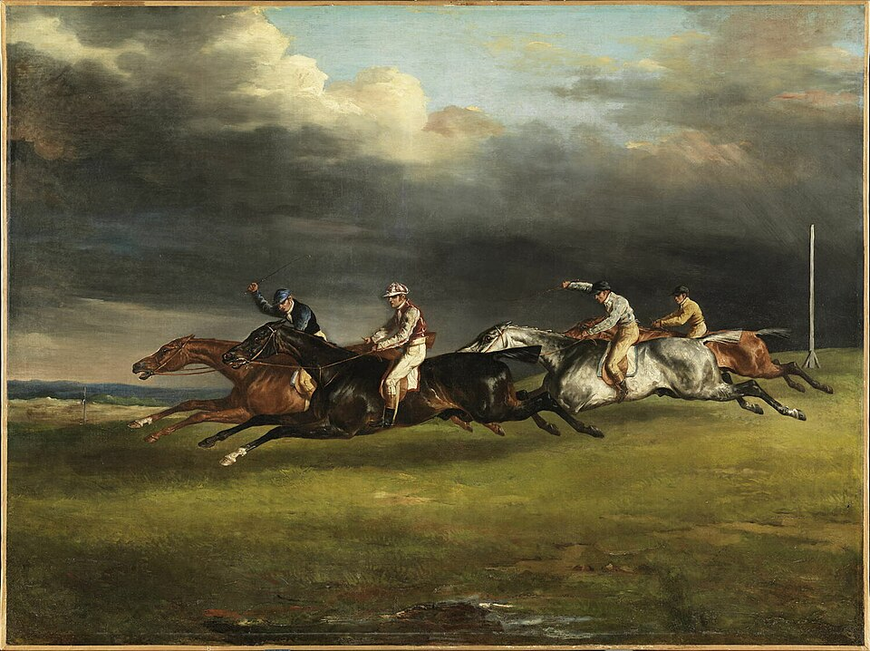
画像を拡大 ＋《エプソムの競馬（1821年のエプソム・ダービー）》
- 作者
- テオドール・ジェリコー
- 制作時期
- 1821年
- 所在地・所蔵
- ルーヴル美術館（MI 708）
- 素材・形式
- 油彩・カンヴァス
出典・画像について
ドラクロワの登場とグロの矛盾
動画 6:33～ジェリコーの後輩で友人でもあったウジェーヌ・ドラクロワが、その意志を継ぎます。ロマン主義の最重要画家となる彼は、1824年に《キオス島の虐殺》を完成させました。独立を目指すギリシア人が、キオス島でオスマン帝国の激しい弾圧を受ける様子を描いたものです。ジェリコーと同様に身近でスキャンダラスな出来事を取り上げ、女性や子供にも容赦のない暴力を示しました。見る者を鼓舞する躍動感があり、ヨーロッパの関心と世論を動かす一助となります。イギリスやフランスの支援を通じ、結果としてギリシアの独立にも関与しました。

《キオス島の虐殺》
- 作者
- ウジェーヌ・ドラクロワ
- 制作時期
- 1824年
- 所在地・所蔵
- ルーヴル美術館（INV 3823）
- 素材・形式
- 油彩・カンヴァス
出典・画像について
勢いづくロマン主義をよく思わなかったのが、新古典主義を推すアカデミーとグロです。グロはドラクロワの前作《ダンテの小舟》を絶賛していましたが、《キオス島の虐殺》を「絵画の虐殺」と酷評しました。称賛した画家が対立する側だったことは、面目を失う形にもなりました。ただし、二作品は題材こそ違っても、荒々しい筆触や大胆な色彩では共通しています。新古典主義の画家を自認したグロ自身の、形式に縛られない手法にも、ロマン主義的な性質が潜んでいたのです。

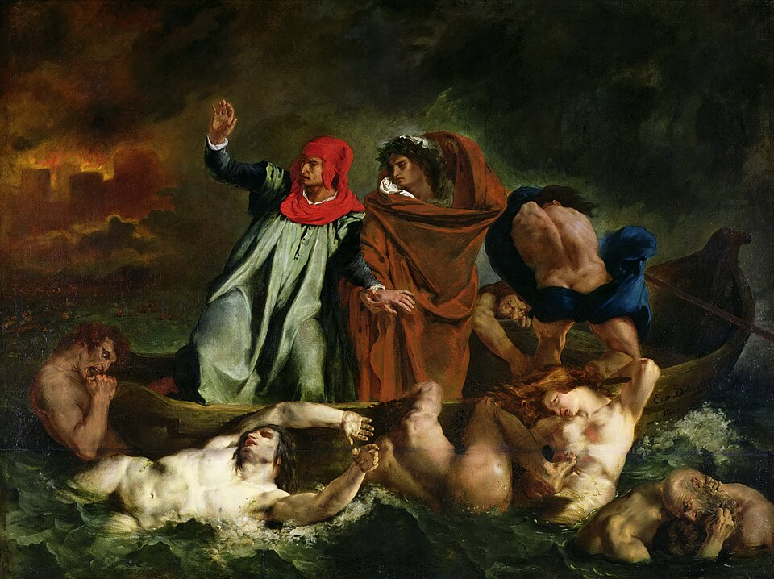
画像を拡大 ＋《ダンテの小舟》
- 作者
- ウジェーヌ・ドラクロワ
- 制作時期
- 1822年
- 所在地・所蔵
- ルーヴル美術館（INV 3820）
- 素材・形式
- 油彩・カンヴァス
出典・画像について
アングルとの対決と七月革命
動画 7:56～帝政期に得たグロの名声は落ち、アカデミーは、新古典主義の新たな代弁者としてドミニク・アングルを送り込みました。ドラクロワが《キオス島の虐殺》を出品した1824年、アングルは《ルイ13世の誓願》を出品します。1827年には、アングルが落ち着いた古典的な《ホメロス礼讃》を発表する一方、ドラクロワはイングランドの詩人バイロンの戯曲『サルダナパール』を基に、《サルダナパールの死》を劇的に描きました。双方が作風を前面に押し出した対決でした。
 画像を拡大 ＋
画像を拡大 ＋
《ルイ13世の誓願》
- 作者
- ジャン＝オーギュスト＝ドミニク・アングル
- 制作時期
- 1824年
- 所在地・所蔵
- モントーバン大聖堂
- 素材・形式
- 油彩・カンヴァス
出典・画像について
 画像を拡大 ＋
画像を拡大 ＋
《ホメロス礼讃（ホメロスの神格化）》
- 作者
- ジャン＝オーギュスト＝ドミニク・アングル
- 制作時期
- 1827年
- 所在地・所蔵
- ルーヴル美術館（INV 5417）
- 素材・形式
- 油彩・カンヴァス
出典・画像について

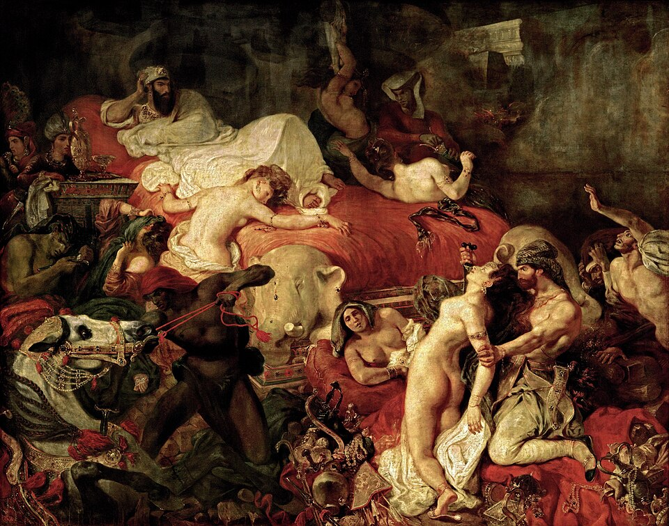
画像を拡大 ＋《サルダナパールの死》
- 作者
- ウジェーヌ・ドラクロワ
- 制作時期
- 1827年
- 所在地・所蔵
- ルーヴル美術館（RF 2346）
- 素材・形式
- 油彩・カンヴァス
出典・画像について
1830年、ドラクロワとロマン主義を代表する《民衆を導く自由の女神》が制作され、フランス政府に買い上げられました。主題は同年の七月革命です。1815年のナポレオン失脚後、ブルボン朝は憲法に制約される立憲君主制として王政復古を果たしました。しかし、シャルル10世が絶対王政を強めようとしたため不満が高まり、学生・小市民・労働者が革命を起こし、ブルボン朝を倒しました。
作品は、フランス共和国を擬人化する自由の女神を中心に、さまざまな社会階層の民衆が自由を求めて蜂起する姿を描きます。政府は革命を支持して購入したものの、さらなる革命の勃発を恐れ、しばらく非公開とするほどでした。
画像を拡大 ＋
《民衆を導く自由の女神》
- 作者
- ウジェーヌ・ドラクロワ
- 制作時期
- 1830年
- 所在地・所蔵
- ルーヴル美術館（RF 129）
- 素材・形式
- 油彩・カンヴァス
出典・画像について
折衷派と二人の巨匠の成功
動画 9:36～七月革命後、新たな支配階層として資本家が台頭しました。オルレアン朝のルイ＝フィリップの時代は立憲君主制でしたが、資本家との癒着が明らかで、裕福な人々のための政治が行われました。美術の有力なパトロンも貴族から新興中産階級へ移り、その趣味を熟知した折衷派の存在感が高まります。ポール・ドラローシュらは、新古典主義とロマン主義の中間に立ち、アカデミーに裏打ちされた素描を重視しつつ、豊かな色彩や劇的な表現を採用しました。
 画像を拡大 ＋
画像を拡大 ＋
《レディ・ジェーン・グレイの処刑》
- 作者
- ポール・ドラローシュ
- 制作時期
- 1833年
- 所在地・所蔵
- ナショナル・ギャラリー、ロンドン（NG1909）
- 素材・形式
- 油彩・カンヴァス
出典・画像について
アングルとドラクロワの対決に折衷派が加わり、やがて新古典主義とロマン主義の対決という意識は薄れ、両者ともアカデミスムへ取り込まれていきました。アングルは巨匠としてアカデミーに迎えられ、ドラクロワも1830年代からフランスの外交使節に随行し、晩年には政府の仕事を多く依頼されました。1855年の万国博覧会では双方の回顧展が開かれ、二人とも画家として大きな成功を収めます。
イギリスのロマン主義
産業革命とフュースリ、ブレイク
動画 11:08～イギリスでは、ナポレオンの侵攻以前からロマン主義が台頭していました。他国に先駆けて産業革命が起こり、それが美術にも反映されたのです。大量生産が可能となり、資本家と労働者の格差、都市の急速な発展、富の集積が進みました。労働者は毎日工場で身体を使い、機械を動かします。国の発展という利点の一方、労働者の没個性化という問題が生まれたことから、個人の感情の動きを重視するロマン主義が現れました。
18世紀後半の主要な画家が、フュースリとブレイクです。スイス人のフュースリは、初代ロイヤル・アカデミー学長レノルズの推薦もあり、教授を務めました。アカデミスムに基づく古典的手法を使いながら、夢を主題とする怪奇で官能的な絵を描きました。ブレイクは詩人であり、自ら挿絵も描く多芸な人物です。古典のような自然の模倣ではなく、想像したものを模倣する文学的作品を作りました。二人は理性や合理性より、人の感情や幻想を表したといえます。

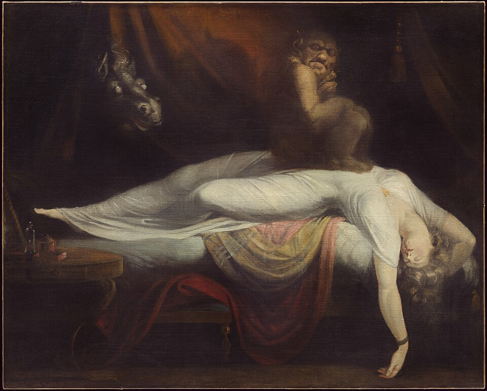
画像を拡大 ＋《夢魔》
- 作者
- ヨハン・ハインリヒ・フュースリ
- 制作時期
- 1781年
- 所在地・所蔵
- デトロイト美術館（55.5.A）
- 素材・形式
- 油彩・カンヴァス
出典・画像について

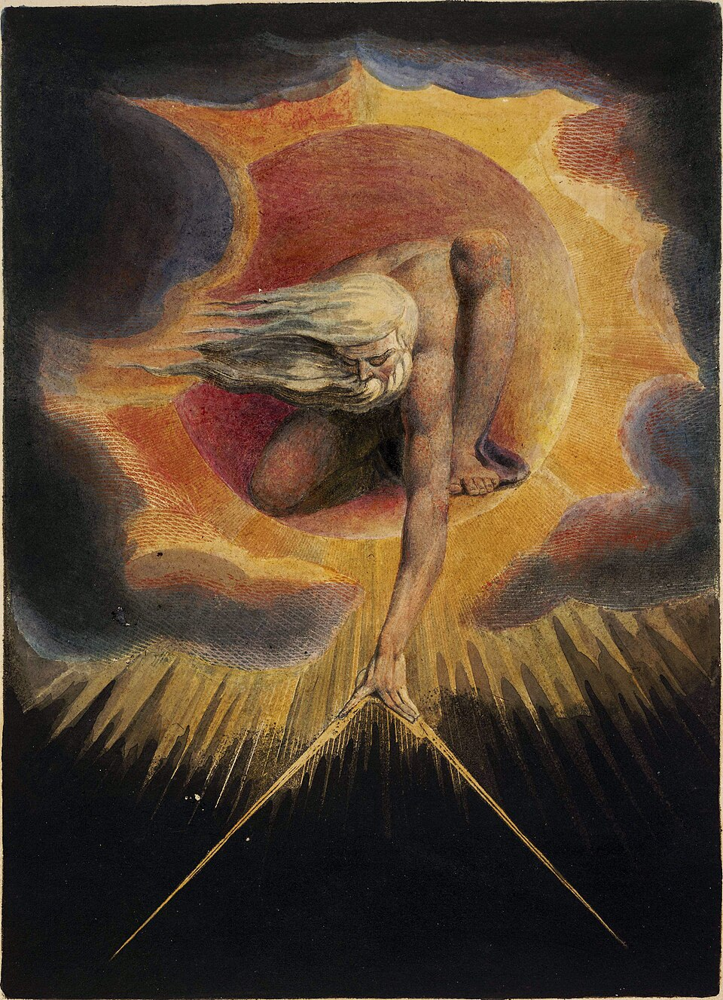
画像を拡大 ＋《日の老いたる者（『ヨーロッパ、一つの予言』Copy D 扉絵）》
- 作者
- ウィリアム・ブレイク
- 制作時期
- 1794年
- 所在地・所蔵
- 大英博物館（1859,0625.72）
- 素材・形式
- 彩色版画
出典・画像について

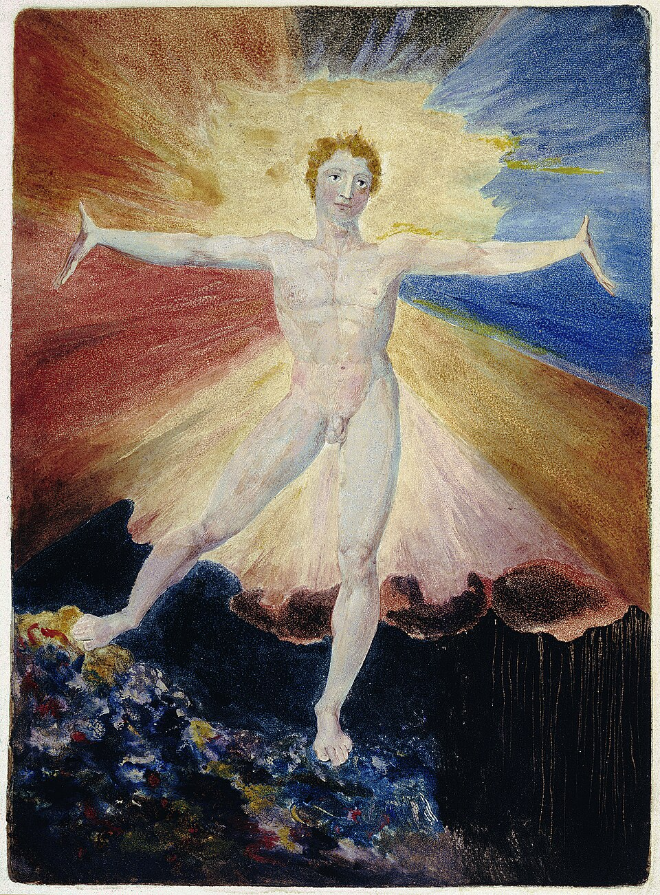
画像を拡大 ＋《歓喜の日（アルビオンの踊り／『大判デザイン集』Copy A）》
- 作者
- ウィリアム・ブレイク
- 制作時期
- 1794～1796年頃（この彩色刷は1796年）
- 所在地・所蔵
- 大英博物館
- 素材・形式
- 彩色版画
出典・画像について
掲載は『大型デザイン集』Copy Aの彩色刷り。出典の説明欄にある別所蔵名と区別し、大英博物館所蔵と確認しました。
画像出典：William Blake
Public domain（PD-Art）
作品情報：作品・画像・利用条件
コンスタブルの風景画
動画 12:27～19世紀のイギリスでは、風景画の分野でロマン主義がさらに開花しました。巨匠ジョン・コンスタブルとウィリアム・ターナーの登場です。風景には人の心を動かす力があり、それも感情を重んじるロマン主義と結び付きます。コンスタブルは、生涯にわたり故郷の穀倉地帯と、移り住んだロンドン郊外を描き続けました。アカデミーには通いましたがイタリアへは行かず、フランスで絵が売れても田舎から出ようとはしませんでした。
コンスタブルは、理想化した自然を描く古典主義の理念に静かに反発していました。時が止まったような静的表現を嫌い、常に移り変わる姿を描こうとします。その代表作が《干草の車》です。イギリスではほとんど評価されず、フランスで大きな反響を呼びました。縦約130センチ、横約185センチという大画面を風景に使った点が、まず異例でした。当時は両国とも、歴史画を頂点とする絵画のヒエラルキーが残っていたからです。
画像を拡大 ＋
《干草の車》
- 作者
- ジョン・コンスタブル
- 制作時期
- 1821年
- 所在地・所蔵
- ナショナル・ギャラリー、ロンドン
- 素材・形式
- 油彩・カンヴァス
出典・画像について
理想とされる古典的手法から離れた荒々しいタッチや鮮やかな色彩も、イギリスでの評価を下げました。作者は移り変わる瞬間や鮮やかな光を表すため、あえてその描法を使いましたが、未完成品の出品と受け取られ、ほとんど注目されませんでした。
ロイヤル・アカデミーでこの作品を見て驚いたのが、フランスから来たジェリコーとドラクロワでした。特にドラクロワは激しいタッチと色彩に感銘を受け、制作中の《キオス島の虐殺》を描き直したといわれるほどです。《干草の車》は1824年のパリのサロンにも展示され、フランスの新世代へ影響を与えました。印象派に特徴的なタッチと鮮やかな色彩にも、コンスタブルらイギリス風景画家の影響があります。本人がイギリスから動かなくても、その絵はフランスの美術を変えていったのです。
光を追うターナー
動画 14:41～コンスタブルと並ぶ巨匠ターナーは、若い頃にはアカデミー好みの写実的な風景画を描き、早くから会員となって地位を得ました。転機は1819年、44歳でのイタリア旅行です。ヴェネツィアの陽光に魅せられ、光を研究して数多くの実験作を描きました。海を照らす鮮やかな日光、激しく燃え上がる火災の光、哀愁漂う夕日の光など、細かな移り変わりを描き分けます。

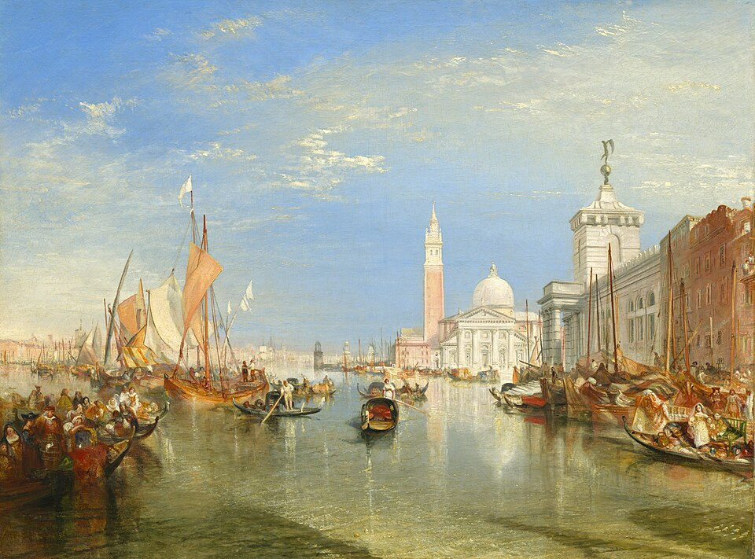
画像を拡大 ＋《ヴェネツィア：ドガーナとサン・ジョルジョ・マッジョーレ》
- 作者
- ジョゼフ・マロード・ウィリアム・ターナー
- 制作時期
- 1834年
- 所在地・所蔵
- ナショナル・ギャラリー・オブ・アート、ワシントン（1942.9.85）
- 素材・形式
- 油彩・カンヴァス
出典・画像について
作品情報：作品・画像・利用条件

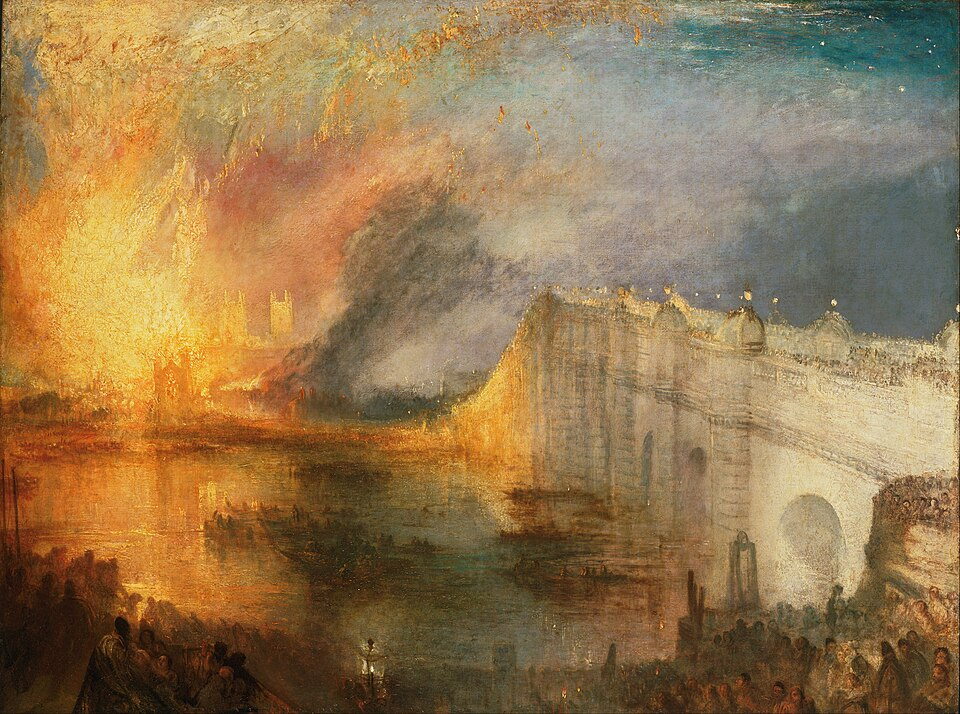
画像を拡大 ＋《貴族院と庶民院の火災、1834年10月16日（フィラデルフィア版）》
- 作者
- ジョゼフ・マロード・ウィリアム・ターナー
- 制作時期
- 1834～1835年頃
- 所在地・所蔵
- フィラデルフィア美術館（M1928-1-41）
- 素材・形式
- 油彩・カンヴァス
出典・画像について

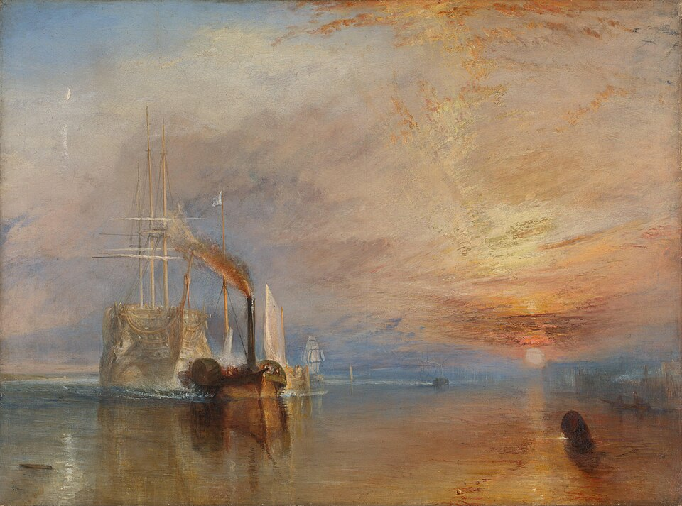
画像を拡大 ＋《戦艦テメレール号》
- 作者
- ジョゼフ・マロード・ウィリアム・ターナー
- 制作時期
- 1839年
- 所在地・所蔵
- ナショナル・ギャラリー、ロンドン（NG524）
- 素材・形式
- 油彩・カンヴァス
出典・画像について
動画画面は1838年と表示。1838年の曳航を主題に、作品の制作年は1839年です。
画像出典：J. M. W. Turner
Public domain / PD-Art（PD-old-100-expired）
作品情報：作品・画像・利用条件
晩年のターナーの作品は次第に抽象化し、ロマン主義らしい激しいタッチへ向かいました。その集大成といえるのが《雨、蒸気、速度―グレート・ウェスタン鉄道》です。蒸気機関車が雨を切り裂き、猛スピードで加速する様子を描き、細部には機関の石炭が燃える光まで表されています。光を追い続けた結果、抽象的な表現へ進んだのでした。コンスタブルとターナーは風景画の地位を高め、その後の方向を定め、バルビゾン派や印象派へ影響を与えました。
 画像を拡大 ＋
画像を拡大 ＋
《雨、蒸気、速度―グレート・ウェスタン鉄道》
- 作者
- ジョゼフ・マロード・ウィリアム・ターナー
- 制作時期
- 1844年
- 所在地・所蔵
- ナショナル・ギャラリー、ロンドン（NG538）
- 素材・形式
- 油彩・カンヴァス
出典・画像について
ドイツのロマン主義
ドイツの愛国心と風景画
動画 16:03～18世紀のドイツでは、絵画に先立って音楽・文学・哲学が発展しました。ベートーヴェン、ゲーテ、カントらが現れた時期です。一方、絵画はフランスにやや遅れ、ロココや新古典主義を追う状況でした。転機はナポレオンの侵攻です。プロイセンがフランス軍に敗れたことで、人々に強い愛国心が生まれました。
その感情を風景に表したドイツ・ロマン主義の代表が、フリードリヒです。初期作《海辺の修道士》のように、広大な自然のなかへ人を小さく置く構図を用いました。自然と人との対比で畏怖の念を表し、人間にはどうにもできない自然の偉大さに、神を思わせる宗教的な意味も込めました。

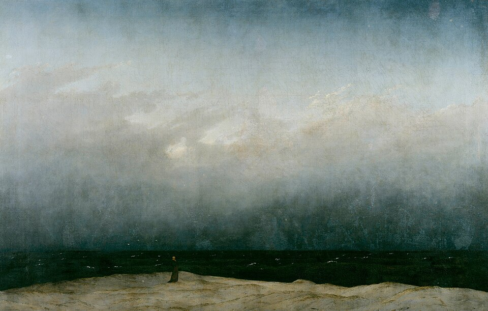
画像を拡大 ＋《海辺の修道士》
- 作者
- カスパー・ダーヴィト・フリードリヒ
- 制作時期
- 1808～1810年
- 所在地・所蔵
- 旧国立美術館、ベルリン
- 素材・形式
- 油彩・カンヴァス
出典・画像について
動画と同じ構図の、修復前の原画画像です。
画像出典：Caspar David Friedrich
Public domain / PD-Art（PD-old-100-expired）
作品情報：作品・画像・利用条件
代表作《北極海の難破船》では、巨大な氷山に砕かれた船が運命の恐ろしさを感じさせます。船体は氷の傍らに小さく見えます。晩年には愛国思想が危険視され評価を落としましたが、独特の構図と力強いタッチによって、今もドイツ・ロマン主義を代表する画家です。
 画像を拡大 ＋
画像を拡大 ＋
《氷の海（北極海の難破船）》
- 作者
- カスパー・ダーヴィト・フリードリヒ
- 制作時期
- 1823～1824年
- 所在地・所蔵
- ハンブルク美術館（HK-1051）
- 素材・形式
- 油彩・カンヴァス
出典・画像について
動画画面は1823年と表示。作品資料の制作年代幅を記載しています。
画像出典：Caspar David Friedrich
Public domain / PD-Art（PD-old-100-expired）
作品情報：作品・画像・利用条件
同じく活躍したルンゲも、象徴的な風景を描き、宗教的な感情を表そうとしました。フリードリヒとルンゲの風景画に共通するのは、神秘性です。

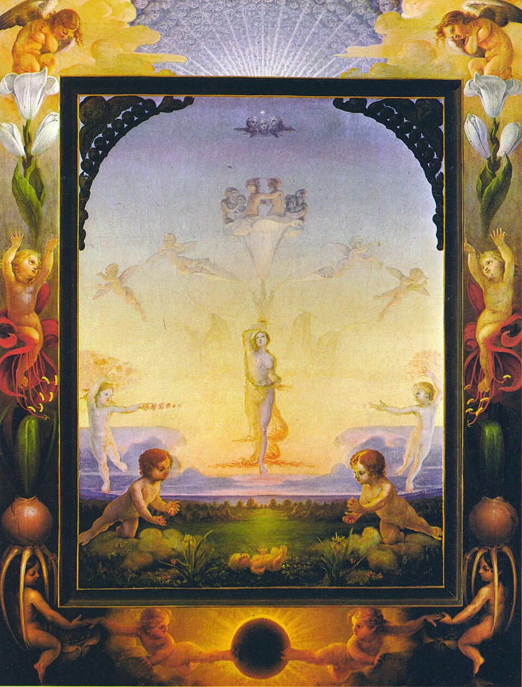
画像を拡大 ＋《朝（小さな朝／第1稿）》
- 作者
- フィリップ・オットー・ルンゲ
- 制作時期
- 1808年
- 所在地・所蔵
- ハンブルク美術館（HK-1016）
- 素材・形式
- 油彩・カンヴァス
出典・画像について
装飾枠を含む《小さな朝》（第1稿）。《大きな朝》と区別しています。
画像出典：Philipp Otto Runge
Public domain / PD-Art（PD-old-100-expired）
作品情報：作品・画像・利用条件
スペインのゴヤ
ゴヤと「黒い絵」
動画 17:49～スペインのロマン主義を代表するゴヤは、バロック期のベラスケスと並ぶ巨匠です。18世紀後半には宮廷画家としてロココ調の色彩とタッチを用いていましたが、1792年の病気による聴覚喪失と、19世紀初頭のナポレオンの侵攻が、彼を変えました。《マドリード、1808年5月3日》では、無抵抗なスペインの民衆がナポレオン軍に銃殺される瞬間を描きます。侵攻を非難するこの主題には、ジェリコーやドラクロワとの共通性があります。

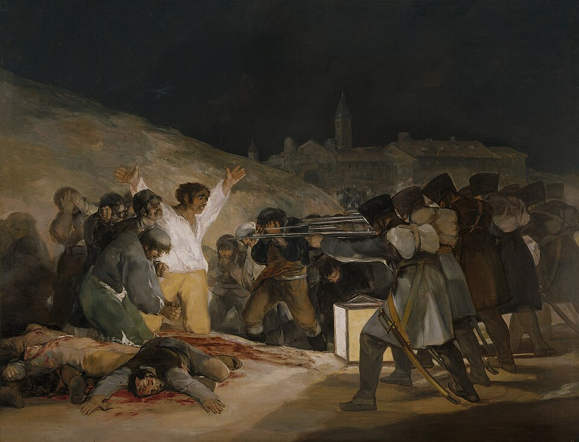
画像を拡大 ＋《マドリード、1808年5月3日》
- 作者
- フランシスコ・デ・ゴヤ
- 制作時期
- 1814年
- 所在地・所蔵
- プラド美術館、マドリード（P00749）
- 素材・形式
- 油彩・カンヴァス
出典・画像について
もともとフランスの啓蒙思想に関心があったゴヤは、その行き着く先が自国への侵攻だったことに落胆しました。聴覚を失った絶望もあり、晩年には公的な仕事を離れ、自宅にこもる生活が続きます。そこで人知れず、自室を飾るためだけに描いた連作が「黒い絵」です。
代表作《我が子を食らうサトゥルヌス》の主題は、ローマ神話の神です。将来自分の子に殺されるという予言を恐れ、子を食べたという伝承があります。ゴヤが何を思ってこの連作を制作したのかは分かりませんが、いずれも人間の負の感情や死を主題としたとされます。宮廷画では見られなかった荒々しいタッチを用い、主観的な感情を託した点でロマン主義的でした。他人の依頼によらず、自分の感じたことをそのまま描く姿には、近代の絵画のあり方も感じられます。

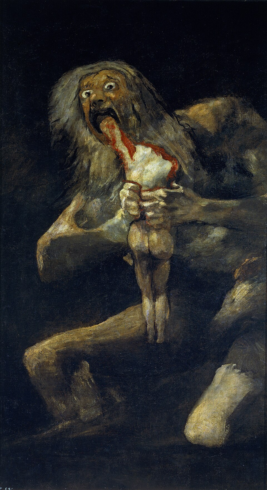
画像を拡大 ＋《我が子を食らうサトゥルヌス》
- 作者
- フランシスコ・デ・ゴヤ
- 制作時期
- 1820～1823年
- 所在地・所蔵
- プラド美術館、マドリード（P000763）
- 素材・形式
- 壁画（後にカンヴァスへ移された作品）
出典・画像について
近代美術の幕開け
写真と近代美術
動画 19:30～19世紀には写真が発明されました。ドラクロワやアングルの姿も、写真に残されています。この発明は美術界を震撼させ、画家の生活を脅かすとして、アングルが政府に使用禁止を求めたほどです。折衷主義のポール・ドラローシュも、写真を見て「今日をもって絵画は死んだ」と述べたといわれています。しかし、ここから絵画は急速に発展しました。写実性を重んじる時代は終わり、伝統的な主題も意味を失い、それまでの常識が次々に覆る近代美術が幕を開けます。

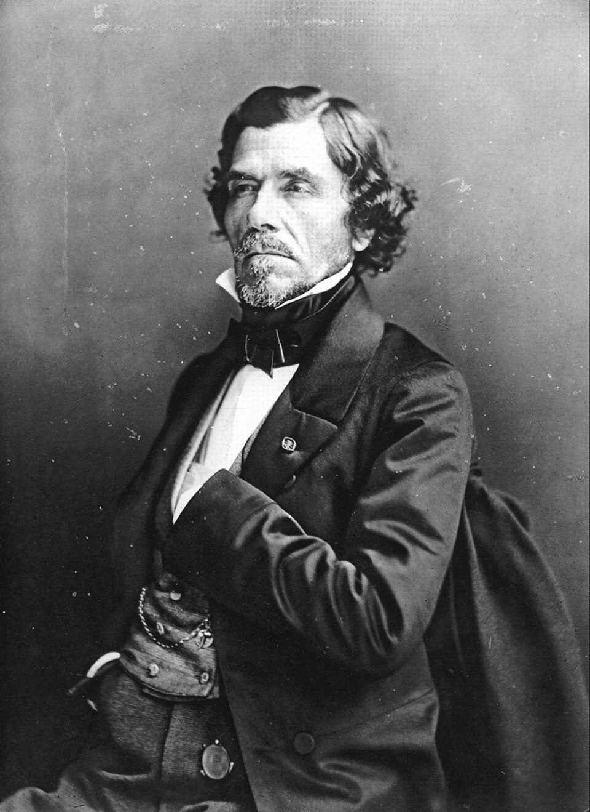
画像を拡大 ＋《ウジェーヌ・ドラクロワの肖像写真》
- 作者
- ナダール（ガスパール＝フェリックス・トゥールナション）
- 制作時期
- 1858年
- 所在地・所蔵
- 原写真の所蔵先は未確認（Wikimedia Commons公開スキャン）
- 素材・形式
- 写真
出典・画像について
原写真の所蔵個体は未確認。動画と同じ姿・構図の写真図像を掲載しています。
画像出典：ナダール（撮影） / Wikimedia Commons
Public domain（PD-old-100／Public Domain Mark）
作品情報：作品・画像・利用条件
要点まとめ
- ロマン主義は18世紀末から19世紀前半に西洋全体へ現れた美術潮流。語源は物語を意味するロマンスで、規範より自由、普遍性より個性、理性より感情を重視し、新古典主義と対になる。ナポレオンの侵攻が、各国の歴史や風土に根差す美術を育てた。
- フランスでは帝政期のグロの色彩にロマン主義が先取りされていた。1815年のナポレオン失脚後、形骸化した新古典主義（アカデミスム）に反発する若い画家たちからロマン主義が始まった。
- ジェリコーが1819年のサロンに出した《メデューズ号の筏》がロマン主義の幕開けとなった。身近に起きたスキャンダラスな事件を歴史画の形式で描いた。
- ロマン主義の最重要画家ドラクロワは、《キオス島の虐殺》でオスマン帝国によるギリシア人の弾圧を描き、グロに「絵画の虐殺」と酷評された。《サルダナパールの死》でアングルと対決し、1830年の七月革命を主題に《民衆を導く自由の女神》を描いた。
- 七月革命後のオルレアン朝ではパトロンが新興中産階級へ移り、ドラローシュら折衷派が台頭した。やがて新古典主義とロマン主義はともにアカデミスムへ取り込まれ、1855年の万国博覧会ではアングルとドラクロワの回顧展が開かれた。
- イギリスでは産業革命による没個性化への反動からロマン主義が早く現れた。フュースリは夢を主題とする怪奇な絵を、詩人ブレイクは想像を模倣する文学的作品を作った。
- コンスタブルは《干草の車》で移り変わる風景を荒々しいタッチで描き、1824年のパリのサロンでドラクロワらに影響を与えた。ターナーはイタリア旅行で光を研究し、《雨、蒸気、速度―グレート・ウェスタン鉄道》で抽象的な表現へ進んだ。二人はバルビゾン派や印象派へ影響した。
- ドイツではプロイセンの敗北から愛国心が高まり、フリードリヒが《海辺の修道士》《北極海の難破船》で自然への畏怖を表した。ルンゲも神秘的な風景を描いた。
- スペインのゴヤは聴覚の喪失とナポレオンの侵攻を経て、《マドリード、1808年5月3日》で民衆の銃殺を描いた。晩年には自室のための連作「黒い絵」（《我が子を食らうサトゥルヌス》など）を描いた。
- 19世紀に写真が発明され、ドラローシュは「今日をもって絵画は死んだ」と述べたといわれる。写実を重んじる時代が終わり、近代美術が幕を開けた。
確認問題
答えを考えてから開いてください。選択問題は選ぶとすぐ正誤と解説が出ます（選択肢の順番は開くたびに変わります）。各問題のリンクから該当の章や作品カードへ戻れます。
選択問題：0／5問回答・正解0
A. 一問一答答えを考えてから開く
問11819年のサロンに出品され、身近に起きたスキャンダラスな事件を題材にしてロマン主義の幕開けとなった、ジェリコーの作品は何か。
答えを見る
問2聴覚を失い自宅にこもったゴヤが、人知れず自室を飾るためだけに描いた連作を何と呼ぶか。
答えを見る
問3風景としては異例の大画面で、イギリスではほとんど評価されずフランスで大きな反響を呼んだコンスタブルの代表作は何か。
答えを見る
B. 4択選ぶとすぐ正誤と解説
問4ドラクロワの《キオス島の虐殺》が描いた出来事はどれか。
→ 本文で確認（ドラクロワの登場とグロの矛盾）
問5ターナーが光の研究へ向かう転機となったのはどれか。
→ 本文で確認（光を追うターナー）
問6広大な自然のなかに人を小さく置く構図で畏怖の念を表した、ドイツ・ロマン主義の代表的な画家は誰か。
→ 本文で確認（ドイツの愛国心と風景画）
C. 図版問題画像を見て答える
問7この作品の名前と作者を答えよ。
答えを見る
問8この作品の作者は誰か。
→ 作品カードで確認
問9この作品の名前はどれか。
→ 作品カードで確認